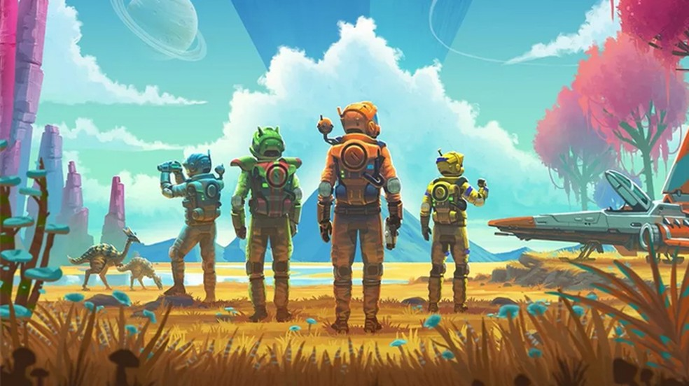

No Man's Sky
Desenvolvido e publicado pelo estúdio independente Hello Games, No Man's Sky é um videojogo de ficção científica com elementos de aventura e sobrevivência.
Pode-se afirmar sem dúvidas que: No Man’s Sky é uma experiência estonteante de exploração espacial
Em No Man's Sky, os jogadores são livres para explorar todo um universo, gerado proceduralmente, que inclui cerca de 18 quintilhões de planetas, todos eles com flora e fauna própria.
Nossa Localização
Nosso localização deve estar à anos luz dessa galáxia!
Plataformas
- Disponível em:
- PC
- XBOX
- Playstation